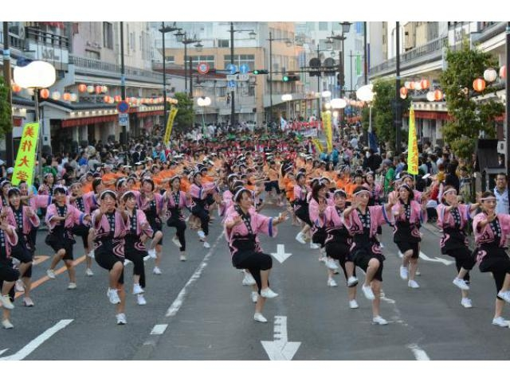
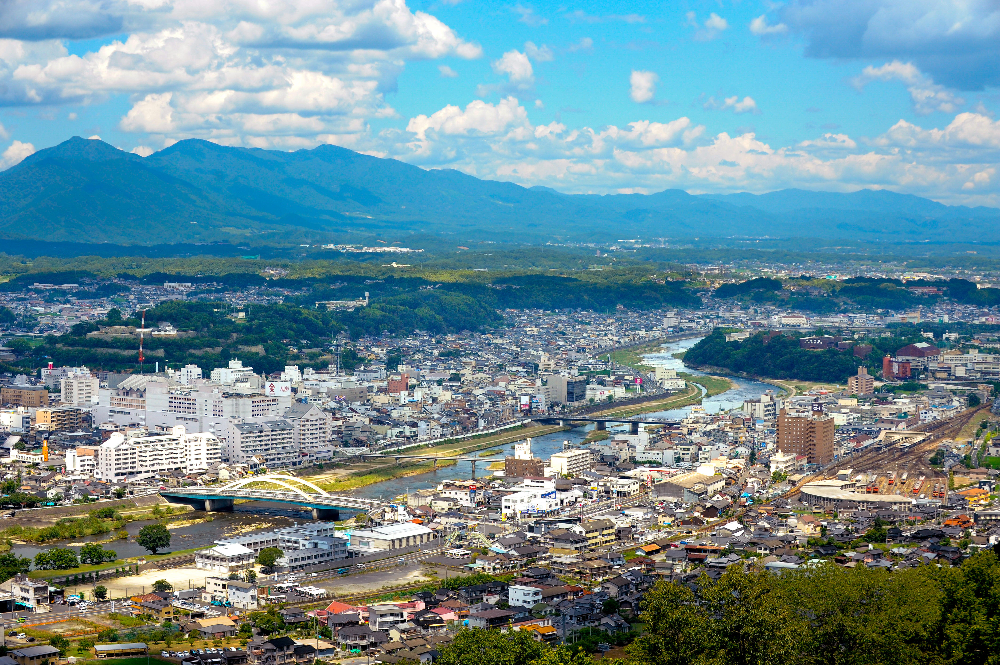
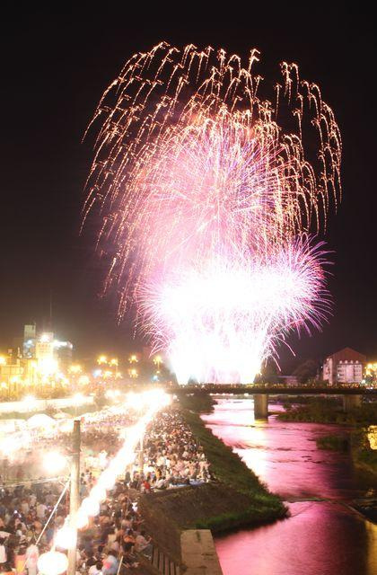
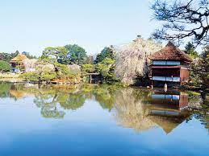
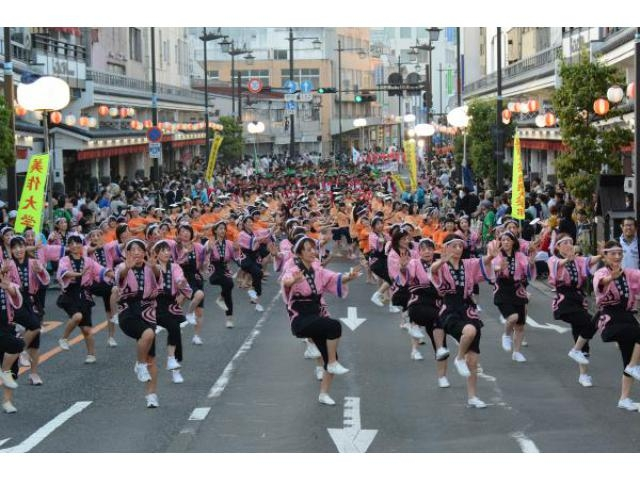
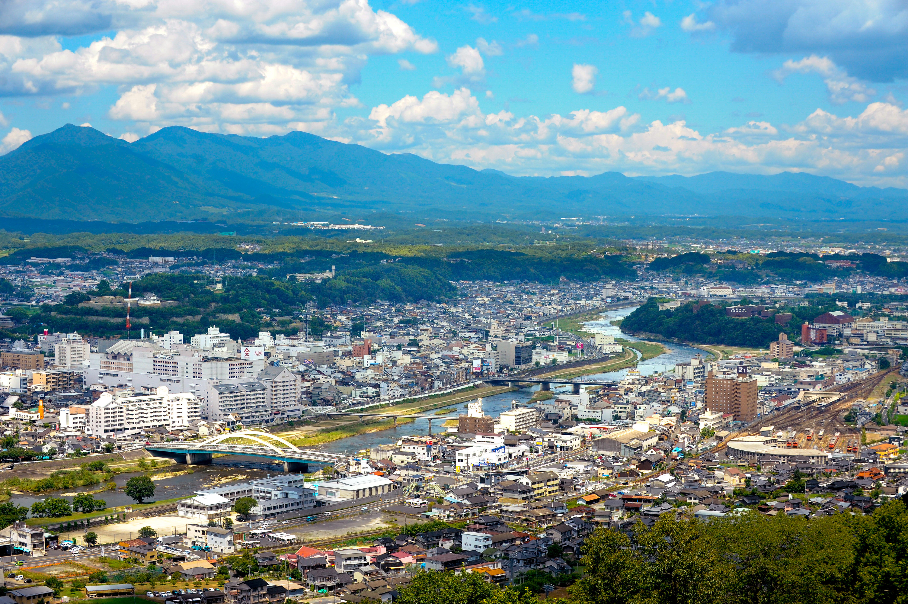
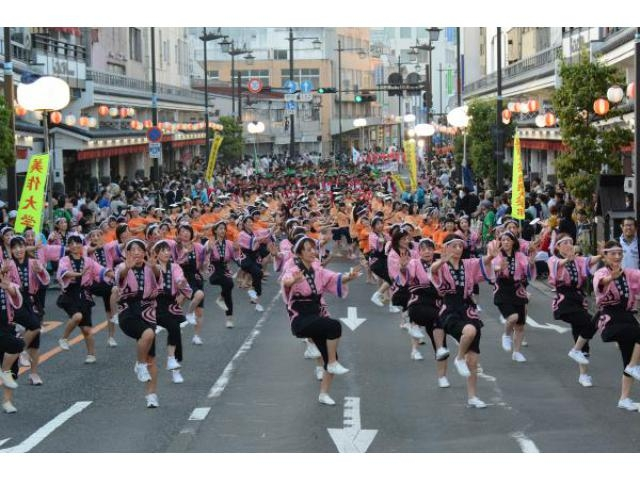
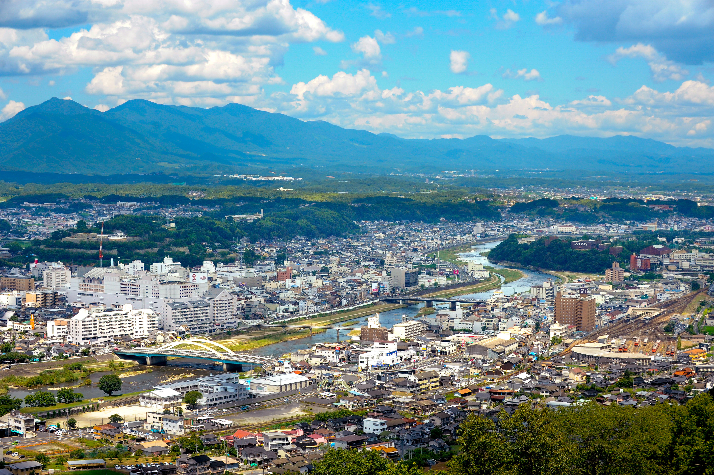

Tsuyama in Okayama, Japan
 
鶴山公園（津山城跡）
春になると桜が満開。 鶴山から見る景色は絶景
ごんご祭り
”ごんご”とは、河童という意味。 吉井川の川沿いに屋台等が並ぶ。 祭りの最後には約5,000発の花火を打ち上げる。 
衆楽園
津山藩2代藩主・森長継（ながつく）が京都から 作庭師を招いて造営された廻遊式庭園。 
 Tsuyama in Okayama, Japan
Tsuyama in Okayama, Japan
Tsuyama in Okayama, Japan
Tsuyama in Okayama, Japan
 


